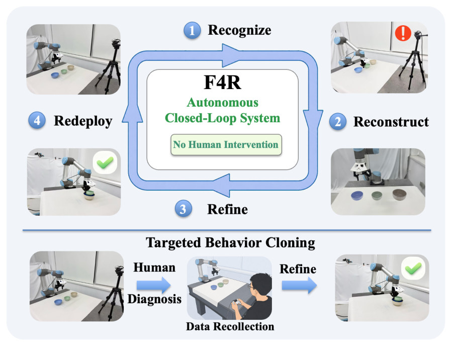
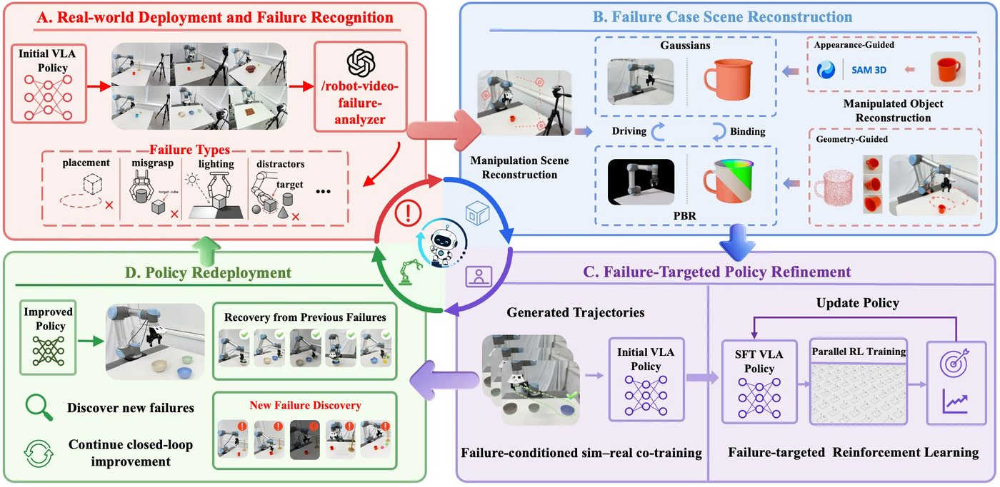
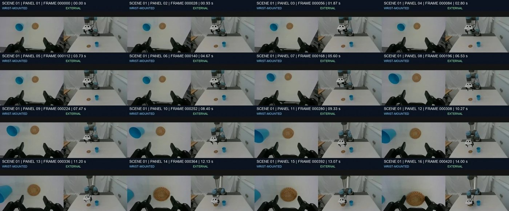
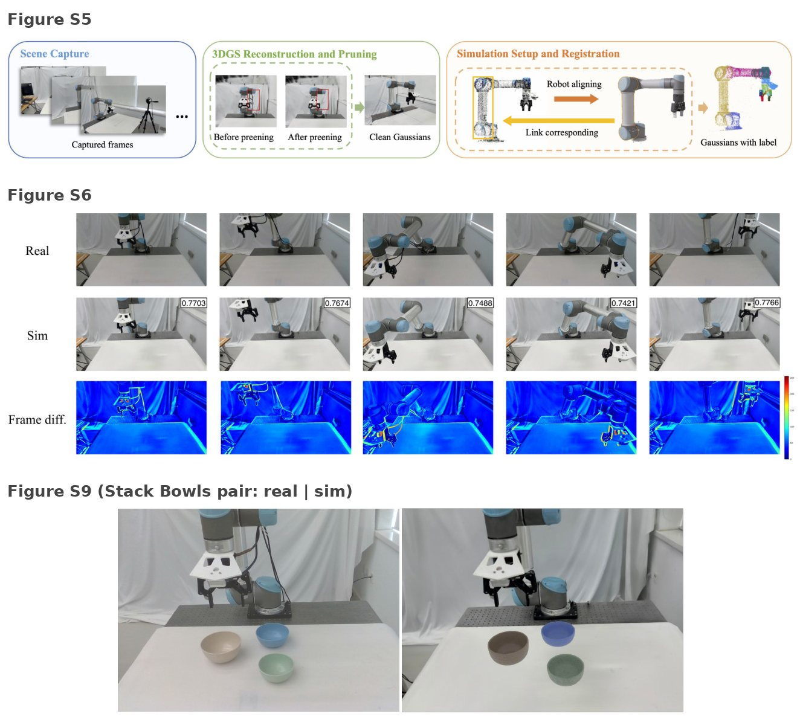
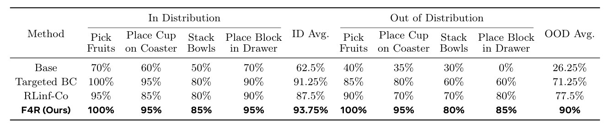
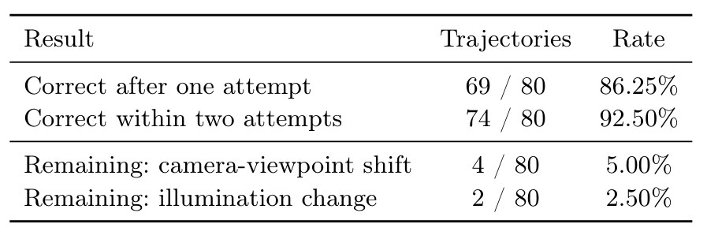
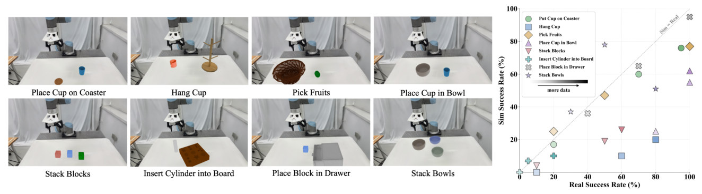
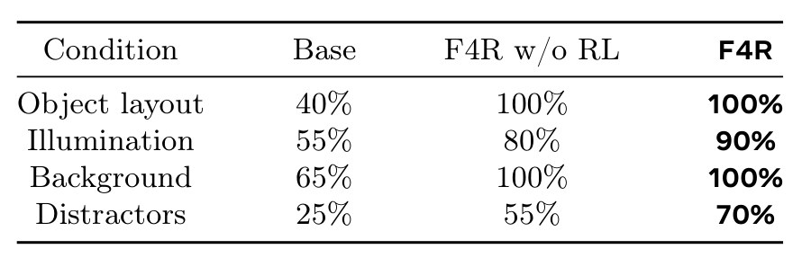
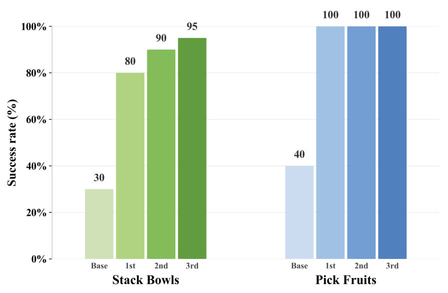
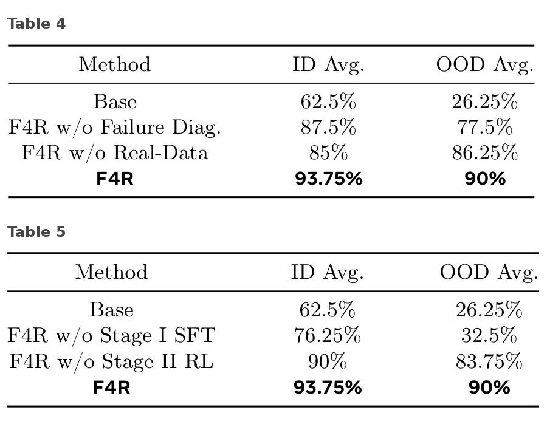

Agent-centric-real-to-sim · 归档于 2026-11-16
F4R
F4R: Failure-Driven Recognition, Reconstruction, Refinement, and Redeployment for Continual Robot Self-Improvement
归档到 Agent-centric real-to-sim：agent 诊断真机失败，再把失败场景重建成保留任务相关空间与物理条件的 Isaac Sim 环境，用来训练 policy（训练这一半也和 Sim-robot-learning 相关）。
TL;DR
- Problem
- VLA（π0.5）在真机部署时一遇到示范没覆盖的条件就失败；补采真机纠错示范又贵又慢，预设的广域仿真随机化又没对准真正失败的条件。
- Idea
- 只有“诊断”交给 VLM agent（GPT-5.5 + 一个 skill，从失败 rollout 里找最早的失败和相关场景因素）；其余是固定流水线：把失败场景按物体重建进 Isaac Sim，在失败条件附近随机化并确认能复现失败，再做 sim–real co-training 和 targeted PPO，再部署，新失败进下一轮。
- Result
- 4 个真机任务上 ID 93.75%、OOD 90.0%（Table 1）；同样 1 小时数据准备预算，OOD 比 Targeted BC 高 18.75 pp、比 RLinf-Co 高 12.5 pp，没有采新的真机纠错示范。
Problem
部署中遇到示范没覆盖的摆放就失败，而现有补救要么靠人重采、要么撒得太宽
Running example · 后面每个 stage 都跟着它走
Stack Bowls（Fig. 1 里的任务）：UR5 + Robotiq 2F-85，base policy 是在真机示范上 SFT 过的 π0.5，指令 Stack one bowl on the other.。部署时碗之间的位移和 yaw 超出了示范范围（OOD：ψ ∈ [−π/3, −π/6) ∪ (π/6, π/3]，示范只覆盖 ψ ∈ (−π/6, π/6)，Table S16）→ base 只成功 6/20 = 30%（Table S19）。
想要：不采新的真机纠错示范就把这类失败修好，而且修完再部署时冒出的新失败也能接着修。
flowchart LR IN["Stack Bowls · OOD
碗距与 yaw 超出示范"]:::example --> A1["Base π0.5 SFT
只见过 ±π/6 的摆放"] A1 --> AX["新摆放下失败
OOD 30%（6/20）"]:::gap IN --> B1["Targeted BC
人诊断 + 真机补采 1 h"] B1 --> BX["1 h 只采到 24 条
OOD 60%（12/20）"]:::gap IN --> C1["RLinf-Co
广域随机化
co-train + sim RL"] C1 --> CX["交互摊到无关变化上
OOD 70%（14/20）"]:::gap
推断说明：Base 那条按 Table S16 的 ID / OOD 定义推断；Targeted BC 的 24 条来自 Table S18（Stack Bowls 每条示范平均 1,740 步，30 Hz 下约 58 s，1 h 里还要摆放和复位，所以条数少——这一层是推断）；RLinf-Co 那条是论文 §4.2 自己的解释：广域随机化可能扩大 sim-to-real gap、冲淡失败附近的训练，且它的训练 loss 已收敛，差距不是没训够。三种方法的数字都是 Table 1 / S19。
根本问题：训练分布没对准部署时真正失败的那些条件——真机补数据贵，预设的广域随机化又不知道该往哪集中。 这篇的切入点：每次真机失败本身就指明了 policy 不稳的条件；把这些条件重建进仿真、只在它附近扩展，在那里生成纠错数据和做 RL。
Related work
| 相关工作 | 解决什么 | 怎么解决 | 和本文的区别 |
|---|---|---|---|
| 同一问题 · 别的解法 | |||
| Targeted BC 本文 baseline（§S4.5） | 修部署中出现的失败 | 人诊断失败，在真机失败分布里补采纠错示范再 SFT | 靠人诊断和真机重采（1 h 只换来 24–48 条）→ agent 诊断、仿真里生成纠错轨迹，0 条新真机示范 |
| Sim–real co-training + sim RL（本文所在的族） RLinf-Co、Sim-and-Real Co-training、SimpleVLA-RL、ConRFT | 用仿真扩大示范覆盖，再用 RL 超越示范 | 真实 + 仿真数据联合 SFT，再在任务级广域随机化的仿真里做 RL | 仿真分布预先设定、与失败无关 → 只在诊断出的失败条件附近随机化（同资产同预算，OOD +12.5 pp） |
| Digital twin + RL TwinRL | 用数字孪生做真实操作的 RL | 重建 workspace 级 twin，扩 SFT 覆盖、初始化仿真 RL，再由人参与真机修正 | twin 按整个 workspace 建、真机修正靠人 → 由失败决定重建哪些物体、训练集中在哪，循环里不需要人 |
| 相似做法 · 别的问题 | |||
| Real-to-sim reconstruction RialTo、RL-GSBridge、RoboGSim、GS-Playground、RoboSplat、EmbodieDreamer、RoboSimGS、URDFormer、Scalable Real2Sim | 从真实扫描 / 视频建可交互仿真，缩小 sim-to-real gap | 扫描或 3DGS + mesh，恢复几何、外观和物理 | 按场景 / 任务决定建什么，和 policy 的失败无关 → 失败决定重建什么、往哪个方向扩展 |
| Failure diagnosis → repair 闭环 ASPIRE | 让 code-as-policy 从失败中改进 | 诊断失败 → 修程序 → 验证过的解存进 skill library | 修的是代码、不建环境 → 把失败变成仿真环境，再更新 VLA 权重 |
来源：论文 §1、§2 Related Work、§4.2 和 §S4.5 的 baseline 描述；未另行检索。RialTo 在 library 里有页面，论文没有和它直接比数字。
Level 1 · Big picture
把每次真机失败变成一个“围着这次失败”的仿真训练场，训练完再部署，新失败进下一轮

怎么读这张图
- ① Recognize（上方，右上照片带红色 “!”）：真机部署中出了一次失败；例子里就是 Stack Bowls 在 OOD 摆放下失败的 rollout。
- ② Reconstruct（右下，三只碗的渲染图）：把失败场景重建进仿真，对应 Stage 2–3。
- ③ Refine（底部箭头）：在重建出的环境里训练 policy，对应 Stage 4。
- ④ Redeploy（左下，绿勾）：碗叠好了；再部署后冒出的新失败回到 ①，对应 Stage 5。
- 中间 “Autonomous Closed-Loop System / No Human Intervention”：指每一轮循环不需要人；工作台的一次性拍摄与重建仍要人参与（§3.3 称之为 “the only human-assisted stage”）。
- 下半 “Targeted Behavior Cloning”：Human Diagnosis → Data Recollection（人遥操作重采）→ Refine；例子里这一路 1 h 采到 24 条，OOD 60%。
flowchart LR I["Input
Stack Bowls 失败
OOD 30%"] --> M["F4R 一轮
诊断 → 重建 → 训练"] M --> O["Output
再部署 OOD 80%"] O -.->|新失败| M
谁在做什么：agent 只负责诊断
| 环节 | 谁做 | 具体（Stack Bowls） |
|---|---|---|
| 分出失败的 rollout | task-specific 二值 success checker | 诊断只处理已知失败；论文没写真机上这个 checker 怎么实现 |
| 选时间窗、拼 evidence board | 确定性代码，不用 VLM | 双视角帧差找峰 → 最多 12 个窗口，每张 board ≤ 24 个时刻 |
| 最早失败帧、对象、操作、失败类型、场景因素 | agent：GPT-5.5 + robot-video-failure-analyzer skill | K+3 次固定顺序的调用，输出严格 JSON，温度 0.05 |
| 诊断 → 随机化目标 | 确定性代码（exporter 查 Table S4） | 如 “Object slips during grasp” → friction、object mass、contact parameters、gripper closing speed |
| 工作台场景 S | 人一次性拍摄 + 固定流水线 | iPhone 拍约 5 min → 3DGS → Sim3 配准；约 30 min，工作台不变就复用 |
| 物体资产 | 机器人自动扫描 + 固定流水线（铰接件多一次 VLM 推断） | 每只碗：腕部 RGB-D → TSDF → ShapeR → PBR 贴图 → Gaussians，5–10 min |
| 落参数、组装、局部随机化、仿真验证 | 上层 F4R workflow，固定规则 | 在碗位姿 / 摆放顺序附近采样；初始 policy 在仿真里成功率 ≤ 0.70 才接受 |
| 纠错数据 | MimicGen（+ AnyGrasp + 运动规划） | 28 条 seed → 450 条仿真成功轨迹 |
| 训练 | Stage I co-training（SFT）→ Stage II PPO | real:sim 采样比 1:10；256 个环境 × 200 次更新，稀疏奖励 |
| 再部署 | 真机；人只负责急停 | OOD 30% → 80%，新失败进下一轮 |
- “agent” 有多大自主权：正文叫它 “VLM-based diagnostic agent”（§3.2），结论说它是 “an agent equipped with a dedicated failure discovery and diagnosis skill”；附录 §S1.4 写明它是 inference-time controller——模型、prompt、JSON schema、温度和调用顺序都固定，不是训练出来的网络。它不写代码、不选工具，也不决定重建和训练怎么做。
- 它的输出怎么影响下游：一条 failure record 决定“重建哪些物体”和“随机化哪些变量”（§3.2 末句）；之后全由固定流水线和固定规则完成。
Level 2 · Stages
5 个 stage，外加一个跨 stage 的验证循环

怎么读这张图
- A. Real-world Deployment and Failure Recognition（左上，红）：Initial VLA Policy 的多段真机 rollout → “/robot-video-failure-analyzer”（OpenAI 标志 = GPT 后端的 skill）→ “Failure Types”：placement、misgrasp、lighting、distractors……这是 Stage 1，也是全图唯一由 agent 做的部分。
- B. Failure Case Scene Reconstruction（右上，蓝）：左边 “Manipulation Scene Reconstruction” 是一次性重建的工作台；中间 “Gaussians” 和 “PBR” 两行之间的 “Binding / Driving”：PBR mesh 跑物理，绑在上面的 Gaussians 负责渲染；右边 “Manipulated Object Reconstruction” 有两条路，“Appearance-Guided”（单图生成，SAM 3D）和 “Geometry-Guided”（腕部多视角扫描 → 点云），实验用的是后者（§S2.2）。这是 Stage 2。
- B 到 C 的蓝色大箭头：图里没有单独画失败附近的随机化和仿真验证（Stage 3 与验证循环），它们写在 §3.4 和 §S1 “Simulation-side validation”。
- C. Failure-Targeted Policy Refinement（右下，紫）：左半 “Generated Trajectories” 喂给 Initial VLA Policy = failure-conditioned sim–real co-training；右半 SFT VLA Policy → “Parallel RL Training” → 回到 “Update Policy” = failure-targeted RL。这是 Stage 4。
- D. Policy Redeployment（左下，绿）：Improved Policy 回到真机；“Recovery from Previous Failures”（绿勾）和 “New Failure Discovery”（红 “!”），新失败回到 A。这是 Stage 5。
- 中心圆环：红 “!”（失败）→ 蓝立方（重建）→ 紫（训练）→ 绿机械臂（部署），即 Fig. 1 的四个 R。
flowchart TD S1["1 · Recognize · agent
失败 rollout → record"] --> S2["2 · Reconstruct · 固定流水线
碗资产 + 失败时位姿"] S2 --> S3["3 · Expand · 固定规则
碗位姿 / 顺序附近随机"] S3 --> S4["4 · Refine · co-train → PPO
450 条仿真纠错轨迹"] S4 --> S5["5 · Redeploy · 真机
OOD 30% → 80%"] S3 -.->|仿真里没复现 → 重做| S1 S5 -.->|新失败 → 下一轮| S1 click S1 href "#stage-1" click S2 href "#stage-2" click S3 href "#stage-3" click S4 href "#stage-4" click S5 href "#stage-5"
点击 stage 展开 Level 3 细节；S3 回到 S1 的虚线是跨 stage 的验证循环。
Level 3 · Details
每个 stage 的细节
Stage 1 Recognize：agent 诊断失败 一条失败 rollout（腕部 + 外部两路视频）→ 一条 failure record
- Why：先要知道失败发生在哪一步、跟哪个物体和哪些场景因素有关，才能决定重建什么、随机化什么。
- 前提：task-specific 二值 success checker 先挑出失败 rollout；诊断只处理已知失败，JSON 里 success=no 是固定的（§S1.1）。
- 选时间窗（确定性代码）：每 3 帧扫一次（30 Hz 视频 → 10 Hz），灰度 160×90 的帧差 → 平滑 + MAD 标准化 → 外部视角 ×1.2、腕部 ×0.85 取较大值 → 最多 10 个峰（间隔 ≥ 240 帧），每峰向前 120、向后 180 帧，加首尾窗口（≤ 301 帧），间隔 ≤ 60 帧的合并，最多 12 个窗口。
- 拼 evidence board（确定性代码）：每个窗口一张图，最多 24 个同步时刻，左腕部、右外部，每格印原始帧号；另有一张 state board（首 8 帧 + 末 8 帧，标 START / END）。
- VLM 调用（agent）：K 张 event board 共 K+3 次调用——每张 1 次（有没有失败证据）、state board 1 次（只比首末状态，不推断运动）、focused 1 次（在最早的正例 board 里找第一处可见异常，抄 header 上的帧号）、aggregation 1 次（纯文本，合并前面所有 JSON）。
- “最早原因” 规则：后面的掉落、空搬运、终态不完整都算后果；若第一格就已异常，只报最早可见时刻并降低置信度。
- 固定的部分：GPT-5.5 走 OpenAI-compatible API，prompt、JSON schema、温度 0.05 都固定（§S1.4）。公式 (3) 里有语言指令 ℓi，但发布的 v2 脚本不把指令写进 prompt，任务语义来自配置的候选标签列表、物体别名和前面的 success checker；换任务只换标签和别名。
- 工程细节：每次调用的结果缓存，可 --resume；API 超时同一请求最多重试 4 次（等 5 / 10 / 15 / 20 s），不算新的诊断；返回标签按候选列表过滤。
- 出口（确定性代码）：exporter 按 Table S4 把诊断查表成随机化目标（见 Stage 3），并导出 reset 窗口：从 t* 往前 clip(0.05·t*, 30, 180) 帧（没有有效帧时取 90 帧）。论文没细说 reset 窗口在仿真里怎么用。
符号
failure record Fi = (t*i, Oi, σi, Zi, Ei, κi)（Eq. 3），逐项如下：
| 符号 | 白话 | 例子里（Stack Bowls） |
|---|---|---|
| t*i | 最早能看到失败的那一帧（board 上印的原始帧号） | 论文未给出 |
| Oi | 和这次失败有关的物体 | 碗 |
| σi | 失败的子任务和失败类型（grasp / transport / place / release；place_failed、object_slipped……） | 论文未给出 |
| Zi | 1–3 个与失败相关的场景因素（pose、stiffness、friction、lighting、background、view、clutter） | 论文未给出单条；这个任务被随机化的是 bowl poses / placement order（Table S11） |
| Ei | 带视角和帧号的文字证据，可审计 | 论文未给出 |
| κi | 自报的置信度，0.10–0.95，没校准，也不做阈值 | 论文未给出 |

怎么读这张图
- 每格顶部 “SCENE 01 | PANEL 01 | FRAME 000000 | 00.00 s”：场景号、格序号、原始帧号、时间戳；agent 报 t* 时要抄的是 FRAME 后面的原始帧号，不是格序号。
- 每格左 “WRIST-MOUNTED”、右 “EXTERNAL”：腕部看接触和遮挡，外部看物体与容器的关系（§S1.2 融合帧差时外部 ×1.2、腕部 ×0.85）。
- 4 × 4 共 16 个时刻，从左到右、从上到下：这张是一只蓝杯子和一个编织杯垫的场景，不是 Stack Bowls；论文没公布 Stack Bowls 的 board。
- 帧号等间隔（每 28 帧，0–14 s）：排版和 §S1.3 说的 16 时刻 overview board 一致；真正送给 VLM 的 event board 在候选交互附近加密采样，最多 24 个时刻（这是我对照图注和 §S1.3 的观察）。
flowchart TD a["success checker
只把失败 rollout 送来"] --> b["temporal proposal · 代码
帧差峰值 → ≤12 个窗口"] b --> c["拼 board · 代码
event：≤24 个时刻
state：首尾各 8 帧"] c --> d c --> s subgraph V["VLM 调用 · GPT-5.5"] d["K 次 event
每张：有无失败证据"] --> e["1 次 focused
最早正例 board → t*"] s["1 次 state
START vs END"] --> f e --> f["1 次 aggregation
纯文本 → record"] end f --> g["exporter · 查表
record → 随机化目标"]:::win
Running example 在这一步
Stack Bowls 部署中失败的 rollout 逐条走这一步（base 在 OOD 评测里 20 次失败 14 次；论文没说每轮实际诊断了多少条）：最长 1500 步（30 Hz 下 50 s）→ 最多 12 个窗口 → 每张 board ≤ 24 个时刻 → K+3 次 GPT-5.5 调用 → 一条 record。论文没公布这些 record 的内容；Table S21 只给出这个任务各轮的失败类别：Object Order → Object Placement → Illumination。
Stage 2 Reconstruct：把失败场景搬进 Isaac Sim failure record + 共享工作台 → nominal 仿真环境 M̂i
- Why：只重建这次失败涉及的物体、它们的空间关系和失败相关的条件，让失败能在仿真里重现；静态工作台只建一次，跨失败、跨轮复用。
- 两层：共享工作台 S（静态，一次性）+ 每个相关物体一份可复用资产 Ao（几何、外观、可选的铰接）。
- 工作台 S（唯一需要人的环节）：iPhone 17 Pro 以 1920×1080 / 30 FPS 拍约 5 min → 3DGS（30000 次迭代）→ 删掉浮点和线缆 → 机器人 Gaussians 与 Isaac Sim 里的机器人做 FPFH → Sim3 RANSAC → Sim3 ICP 配准（Sim3 补尺度差）→ 每个 Gaussian 绑到所属 link，跟着仿真里的 link 位姿动；桌面高度用拟合加实测确认；约 30 min，工作台不变就复用（Table S8）。
- 物体资产（自动）：机器人用腕部相机自己采多视角 RGB-D（约 2 min）→ 学习式深度精修 + SE(3) 位姿优化 + masked TSDF → 点云 → ShapeR 补全 → 水密 mesh → SAM2 掩码、挑参考视角 → Hunyuan3D 2.1 生成 PBR 贴图 → 用贴图 mesh 的渲染去优化 Gaussians；5–10 min（Table S10）。
- 另一条路：直接从图像生成仿真资产（Fig. 2 B 的 Appearance-Guided / SAM 3D）；论文说实验用的是多视角几何重建。
- 铰接物体：多模态大模型（Qwen3-VL）从多视角渲染推断可动部件和运动关系，P3-SAM 做部件分割 → 运动结构 Ko（沿用 RoboSimGS）。这是流水线里固定的一步，不是 Stage 1 的 agent；碗用不到，四个训练任务里只有 Place Block in Drawer 的抽屉是铰接物体。
- 落到这次失败上：用证据 Ei 把诊断出的因素 Zi 落成一组 nominal 仿真参数 ξ̂i（物体位姿与铰接状态、机器人初始状态、相机配置、外观、物理属性），再组装 M̂i = Assemble(S, {Ao}, ξ̂i)（Eq. 5）。
- 保住了哪些条件：空间上，相关物体的几何与外观、失败时的位姿和物体之间 / 物体与容器的关系（附录记作 Ri）、机器人初始状态、相机配置；物理上，物体的 mass / friction（asset estimate）和铰接状态，诊断为打滑时再随机化接触参数和夹爪闭合速度（Table S4）。检查有两道：渲染和实拍的 SSIM（Fig. S6，只量工作台）和仿真里能否重现失败（验证循环）。
- 论文没写的：怎样从失败视频里恢复物体位姿；friction / mass 的 “asset estimate”（Table S11）怎么得到。
符号
| 符号 | 白话 | 例子里（Stack Bowls） |
|---|---|---|
| S | 共享的静态工作台：3DGS 重建，配准到仿真里的机器人和相机 | 碗所在的桌面和 UR5 |
| Ao = (goPBR, goGS, Ko) | 一个物体的资产：带 PBR 贴图的 mesh（跑物理）、对齐的 Gaussians（渲染）、可选的运动结构 | 每只碗一份；碗没有 Ko |
| ξ̂i | 这次失败的 nominal 仿真参数：位姿、铰接状态、机器人初始、相机、外观、物理 | 失败时碗的摆放等（论文没给数值） |
| M̂i | 组装好的、带着第 i 次失败条件的仿真环境 | 下图 Fig. S9 右边那样的碗场景 |

怎么读这张图
- Figure S5，从左到右：“Scene Capture”（手机拍的帧）→ “3DGS Reconstruction and Pruning”（红框是被删掉的浮点；图里把 pruning 印成了 “preening”）→ “Simulation Setup and Registration”：“Robot aligning” 把重建出的机器人 Gaussians 和仿真机器人对齐，“Link corresponding” 给每个 Gaussian 标上所属 link → “Gaussians with label”（颜色 = link）。
- Figure S6 三行：Real（D435i 实拍）、Sim（3DGS 渲染，右上角是和实拍的 SSIM：0.7703、0.7674、0.7488、0.7421、0.7766）、Frame diff.（差异热图，亮处集中在机械臂边缘）。这里只量了工作台和机器人，没有量物体。
- Figure S9 的 Stack Bowls 一对（左真机、右重建）：三只碗的相对位置和相机视角都保住了；米色碗在仿真里偏深灰，是外观上的残差（我看图的观察）。
flowchart TD R["failure record
O = 碗 · Z · E"] --> A["物体资产 Ao
腕部扫描 → mesh
+ PBR + Gaussians"] R --> X["nominal 参数 ξ̂
位姿 · 相机
外观 · 物理"] S["共享工作台 S
一次性 3DGS + 配准"] --> M A --> M["Assemble → M̂
失败时的碗场景"]:::win X --> M
Running example 在这一步
O = 碗 → 机器人用腕部相机扫每只碗，得到碗资产（mesh + PBR + Gaussians，没有铰接）；ξ̂ = 失败时碗的位姿、机器人初始状态、相机等 → 和共享工作台组装成 M̂（上图 Fig. S9 右；E3 里 Fig. 3 左侧的 Stack Bowls 格）。准备时间：工作台 25–30 min（一次性），物体 5–10 min（§4.2）。
Stage 3 Expand：围着失败做局部随机化 M̂i + Fi → 失败附近的局部分布，合成训练分布 pF(M)
- Why：一个重建场景只是这次失败的一个实例，只在它上面训练会过拟合；要覆盖失败附近的局部变化，同时不改任务语义。
- 采样：从恢复出的参数 ξif 出发采 ξ ~ piF(ξ | ξif, Fi)，得到随机化实例 Mi,ξ = Rand(M̂i; ξ)（Eq. 6）。
- 只动 record 点名的变量：它们在恢复值附近采；其余变量固定（正文）或轻微扰动（附录 §S3.1 写 “fixed or weakly perturbed”）。
- 可行性过滤：违背任务语义、初始就碰撞、物体出了工作区、任务做不成的样本都丢掉。
- 合成：所有被接受的失败等权混合，pF(M) = 各 piF 的平均（Eq. 7）；不按频率、严重度、验证分数或训练进度加权。
- 用处：pF(M) 同时决定纠错示范在哪里生成、RL 交互集中在哪里（Stage 4）。
符号
| 符号 | 白话 | 例子里（Stack Bowls） |
|---|---|---|
| ξif | 从失败场景恢复出的参数（位姿、机器人初始、相机、外观、物理） | 失败时碗的摆放 |
| ξ | 一次随机采样出的参数 | 碗位姿 / 摆放顺序在附近变一点 |
| piF | 第 i 次失败附近的局部分布 | 围着这一次 Stack Bowls 失败 |
| pF(M) | 所有被接受失败的局部分布等权混合；训练从这里采环境 | 这一轮所有被接受的 Stack Bowls 失败 |
诊断 → 随机化目标（按 Table S4 转录，exporter 的映射）
| 诊断出的条件 | 导出的随机化目标 |
|---|---|
| Object not placed in bowl | bowl position, opening orientation, object initial pose |
| Object slips during grasp | friction, object mass, contact parameters, gripper closing speed |
| Collision with nearby object | clutter density, obstacle position |
| Wrong object grasped | similar objects, color, texture, occlusion |
| Insertion failure | hole-position offset, peg angle, clearance, friction |
| Target occluded | camera viewpoint, illumination, occluder placement |
每个变量从哪来（按 Table S11 转录；论文没给范围数值）
| 任务 | 变量 | nominal 来源 | 可行性约束 |
|---|---|---|---|
| Pick Fruits | Fruit pose (x, y, ψ)；Basket pose / visibility | diagnosed scene | reachable; no overlap；target remains valid |
| Place Cup on Coaster | Cup pose；Coaster pose / wrist visibility | diagnosed scene | reachable；valid placement area |
| Stack Bowls | Bowl poses / placement order | diagnosed scene | stable initial state |
| Place Block in Drawer | Block pose；Drawer pose / orientation | diagnosed scene | reachable；collision-free; operable |
| All | Camera extrinsics | calibration | workspace visible |
| All | Illumination / appearance | recovered scene | physically plausible |
| All | Friction / mass | asset estimate | stable initialization |
flowchart TD a["nominal 环境 M̂
失败时的碗场景"] --> b["采样 ξ
只动 record 点名的变量
碗位姿 / 摆放顺序"] b --> c["可行性过滤
碰撞 · 出界 · 不可行 → 丢"] c --> d["局部分布 piF
这次失败的附近"] d --> e["训练分布 pF(M)
所有被接受的失败等权"]:::win
Running example 在这一步
Stack Bowls 随机化 bowl poses / placement order（来源 diagnosed scene，约束 stable initial state），表里还为所有任务列了相机外参（calibration）、光照 / 外观（recovered scene）、friction / mass（asset estimate）。论文没给任何一个变量的采样范围。
跨 Stage 1–3 验证循环：仿真里复现了失败才算数 一次诊断 + 重建 → 接受 / 重做 / 退回广域随机化
- Why：单次 VLM 诊断不可靠（公共 ViFailback 上最好 65.42%，§S1.6），所以不把诊断当真值，而是看仿真里的行为。
- How：对第 a 次“诊断 + 重建”，在 pF(M) 里评测初始 policy，得到成功率 s(a)：s ≤ 0.70 → 环境复现了真机上的弱点，接受这条 record；s 高于 0.70 → 重做诊断和重建；连续 3 次被拒 → 改用广域随机化。
- 谁执行：上层 F4R workflow；analyzer（agent）只负责视觉诊断和缓存（§S1.4）。
- 没报告的：各任务的 s 值、被拒次数、有没有真的触发回退，以及评测 s 用了多少个仿真 episode。
flowchart TD a["第 a 次诊断 + 重建
碗场景的局部分布"] --> b["初始 policy 在仿真里跑
成功率 s"] b -->|s ≤ 0.70| c["接受
复现了真机弱点"]:::win b -->|s 高于 0.70| d["重做诊断和重建"]:::gap d -.-> a d -->|连续 3 次被拒| e["退回广域随机化"]
Running example 在这一步
base policy 在重建出的碗场景分布里成功率要 ≤ 70%，才说明这个仿真确实重现了真机上那种失败（真机 OOD 只有 30%）；否则说明诊断或重建没抓住原因，回到 Stage 1 重来。
Stage 4 Refine：失败条件下的 co-training，再 targeted PPO pF(M) + 历史成功 rollout + 原始真机数据 → 新 policy
- Why：先用失败条件下的纠错示范把 policy 带到能成功的区域，再用 RL 打磨闭环和接触敏感的动作；真机数据一直参与，防止忘掉原有能力。
- Seeds：历史真机 rollout 里成功的那些；MimicGen 把它们切成 object-centric 的运动片段，适配到从 pF(M) 采的环境里。
- 抓取不够时：AnyGrasp 给候选抓取，任务专用的运动规划器 / 控制器把抓取接到后续片段。
- 过滤：只保留仿真里成功的轨迹，组成 DsimF；失败的不进 SFT，但在 PPO 里仍作为交互经验。
- Stage I co-training：LCT = LSFT(Dreal) + λsim·LSFT(DsimF)（Eq. 8）；π0.5 + LoRA，AdamW 2.5×10⁻⁵，30,000 步，real:sim 采样比 1:10，4 × H20（Table S13）。
- Stage II targeted RL：从 co-trained policy 起步，PPO 在 256 个从 pF(M) 采的并行环境里跑 200 次更新；只用原始的稀疏任务奖励，没有针对失败的 reward shaping；LF4R = LPPO + β·LSFT(Dreal)，β = 0.1（Eq. 9）。
- 算力：Isaac Lab 在 2 × RTX 4090 上采 rollout（H20 没有 RT core），4 × H20 做推理和优化，两边通过 Ray over SSH 同步训练。
- 两段各干什么（Table 5）：只做 RL、从 base 出发，在严重失败区很少探索到成功（OOD 32.5%）；只做 co-training 已到 OOD 83.75%；RL 再加 6.25 pp。
符号
| 符号 | 白话 | 例子里（Stack Bowls） |
|---|---|---|
| Dreal | 训练 base policy 用的原始真机示范 | 条数论文未报告 |
| DsimF | 在失败分布里生成、并在仿真里成功的纠错轨迹 | 450 条 |
| λsim | 仿真数据在 co-training 损失里的权重 | real:sim 采样比 1:10 |
| β | PPO 阶段真机数据 SFT 正则的权重 | 0.1 |
flowchart TD a["seed
28 条历史成功 rollout"] --> b["MimicGen + AnyGrasp
生成 640 · 成功 486"] b --> c["DsimF
保留 450 条"] c --> d["Stage I co-training
real : sim = 1 : 10"] d --> e["Stage II PPO
256 个环境 · 200 次更新"] e --> f["新 policy
OOD 80% · ID 85%"]:::win
Running example 在这一步
28 条历史成功 rollout 当 seed → 生成 640 条 → 仿真里成功 486 条 → 保留 450 条（70.3%，其中 156 条用了 AnyGrasp；486 和 450 的差额论文没解释，Table S12）→ co-training → PPO，每次更新 256 × 900 = 230,400 步 = 4,608 个 action chunk（§S3.4）→ 真机 OOD 80%（16/20）、ID 85%（17/20）。
Stage 5 Redeploy：再部署，新失败进下一轮 新 policy → 真机评测 → 仍在的和新出现的失败 → 回到 Stage 1
- Why：一轮训练修好一些失败，也可能暴露新的失败；把再部署时看到的失败接着送回 Stage 1，循环才能持续。
- How：更新后的 policy 再部署，在之前的失败和新配置上评测；仍然存在或新出现的失败进入下一轮的诊断、重建和训练。
- 复用：工作台和物体资产复用（Table S21 “Assets reused: Yes”）；工作台和物体都没变时，后面一轮只需 10 min 仿真采集（Table S17）。
- 人的角色：真机上有人负责急停，但不诊断失败、不提供纠错示范（§S6.2）。
flowchart TD r0["Round 0 · base
30%"] --> r1["Round 1
80% · Object Order"] r1 --> r2["Round 2
90% · Object Placement"] r2 --> r3["Round 3
95% · Illumination"]:::win
Running example 在这一步
Stack Bowls 三轮：30% → 80% → 90% → 95%（Fig. 4）。Table S21 每轮记下的 “Newly observed failure”：第 1 轮 Object Order、第 2 轮 Object Placement、第 3 轮 Illumination（第 0 行是 “Initial deployment failures”）。论文没说明这一列是该轮训练针对的失败，还是该轮部署后新看到的失败。
Recap：例子覆盖了论文的哪些 idea
| 论文里的 idea | 例子里在哪体现 |
|---|---|
| 二值 success checker 先分出失败 | Stage 1：Stack Bowls 部署中失败的 rollout |
| 双视角时间窗 + evidence board | Stage 1：1500 步的 rollout → ≤ 12 个窗口，每张 ≤ 24 个时刻 |
| VLM agent：固定的 K+3 次调用、“最早原因” 规则 | Stage 1：GPT-5.5 输出一条 record |
| 诊断 → 随机化目标查表 | Stage 1 出口、Stage 3：Table S4 |
| 一次性共享工作台（3DGS + Sim3 配准） | Stage 2：碗所在的桌面，约 30 min，之后复用 |
| 机器人自动扫描物体资产（+ 可选铰接） | Stage 2：每只碗一份资产；铰接只在 Place Block in Drawer 用到，碗用不到 |
| nominal 参数 + Assemble | Stage 2：失败时碗的摆放 → M̂（Fig. S9 右） |
| 失败附近的局部随机化 + 可行性过滤 | Stage 3：bowl poses / placement order |
| 仿真复现验证（s ≤ 0.70），3 次后回退 | 跨 Stage 1–3：碗场景里 base 要失败得足够多 |
| MimicGen + AnyGrasp 生成纠错数据 | Stage 4：28 条 seed → 450 条 |
| sim–real co-training（真机数据防遗忘） | Stage 4：real:sim 1:10 |
| targeted PPO（稀疏奖励 + β 真机 SFT） | Stage 4：256 个环境 × 200 次更新 → OOD 80% |
| 再部署与多轮闭环 | Stage 5：30 → 80 → 90 → 95% |
| 和 Targeted BC 同预算对比 | E1：同样 1 h，Targeted BC 采到 24 条，OOD 60% 对 80% |
Results
同样 1 小时数据准备预算，F4R 在部署失败条件上最好；和只差随机化方式的 RLinf-Co 相比，多出的 12.5 pp 来自“对准失败”
顺序同论文 §4：E1 不采新真机示范能否修好部署失败 → E2 agent 诊断准不准 → E3 重建环境能否代表真机难度 → E4 对不同失败诱因是否都有效 → E5 多轮闭环能否持续变好 → E6 哪个部件起作用。比的都是真机二值成功率（每个 setting 20 次）；没有比训练时间，预算按数据准备时间对齐。
E1不采新的真机示范，能修好部署中的失败吗？§4.2 · Table 1

预算怎么对齐（按 Table S17 转录）
| 方法 | 真机纠错数据 | 工作台 | 物体 | 仿真采集 | 训练 | 可复用资产 |
|---|---|---|---|---|---|---|
| Targeted BC | 60 min | 0 | 0 | 0 | 15 h | — |
| RLinf-Co | 0 | 共享 25–30 min | 5–10 min | 10 min | 10–14 h | Yes |
| F4R | 0 | 共享 25–30 min | 5–10 min | 10 min | 10–14 h | Yes |
| F4R 后续一轮（工作台、物体不变） | 0 | 0 | 0 | 10 min | 10–14 h | Reused |
Targeted BC 那 1 h 采到的成功示范（Table S18）：Pick Fruits 48、Place Cup on Coaster 42、Stack Bowls 24、Place Block in Drawer 35 条；失败的尝试不进训练。
- 说明什么
- 部署失败条件下成功率最高，而且没采新的真机示范。OOD 平均 90.0%：Targeted BC 71.25%（+18.75 pp）、RLinf-Co 77.5%（+12.5 pp）、Base 26.25%；ID 93.75%：Targeted BC 91.25%、RLinf-Co 87.5%、Base 62.5%。例子 Stack Bowls 的 OOD：Base 30%、Targeted BC 60%、RLinf-Co 70%、F4R 80%。Place Block in Drawer：抽屉朝向和示范不同时，base 关抽屉全失败（OOD 0%），Targeted BC 60%、RLinf-Co 80%、F4R 85%。
- 在故事里
- 回答问题 (1)，是全文主证据：失败驱动的 real-to-sim-to-real 不采新示范也能修好部署失败。RLinf-Co 与 F4R 同架构、同真机数据、同仿真资产、同超参和 rollout 预算，只差随机化方式，所以多出的 12.5 pp 归因于“对准失败”。
- 指标
- 二值成功：结束时目标条件满足、松手后仍稳定（Stack Bowls：上面的碗稳稳落在下面的碗上）；每任务每个 setting 20 次，四任务等权平均（计数见 Table S19）；真机结果由不知道方法身份的人看录像判定，模糊的算失败。
- 怎么评测
- UR5 + Robotiq 2F-85，两个 RealSense D435i（固定外部 + 腕部）；四个任务 Pick Fruits、Place Cup on Coaster、Stack Bowls、Place Block in Drawer；初始配置事先用固定 seed 生成，所有方法共用。
- ID = 示范覆盖的配置（yaw 在 ±π/6 内）；OOD = 部署中导出的失败配置（yaw 在 π/6–π/3，同样可达、无碰撞）；机器人初始、相机外参、光照、纹理、背景、物理参数在 ID 和 OOD 之间不变。
- 预算对齐的是端到端数据准备的墙钟时间，不是轨迹条数（见上表）；GPU 训练时间不算在内。
- 对谁有利：F4R 和 Targeted BC 都直接针对这个失败分布训练，OOD 对它们不算“没见过”；每格只有 20 次，5 pp 就是 1 次。
E2agent 的失败诊断有多准？§4.3 · Table 2

- 说明什么
- 诊断大多正确，但不是全对。第一次 69/80 = 86.25%，两次以内 74/80 = 92.50%；剩下 6 条里 4 条是细微的相机视角变化、2 条是光照变化。公共 ViFailback 上不做适配，最好的后端（GPT-5.6-Terra）failure-cause 准确率 65.42%（Fig. S4；正文写 “nearly 70%”），Claude 系列常把预测都归到 gripper 6D pose 一类。
- 在故事里
- 支撑“agent 能自动识别和诊断失败”；不完美这一点也是论文加上仿真验证和回退（验证循环）的理由。
- 指标
- 失败阶段和原因两项都和人工标注一致才算对；后来的后果不能顶替最早的原因。
- 怎么评测
- 8 个任务 × 10 条 = 80 条已知失败的轨迹，人工标注最早失败的操作和原因；GPT-5.5 + robot-video-failure-analyzer skill。
- 论文没说第二次尝试和第一次有什么不同（模型、prompt、温度都固定），也没说这 80 条和 Table 1 训练用的失败是不是同一批。
E3重建出来的环境能代表真机上的难度吗？§4.4 · Fig. 3

- 说明什么
- 仿真和真机成功率强正相关，可以当行为代理，但不是精确估计。24 个 checkpoint 的 Pearson r = 0.7625（p = 1.49 × 10⁻⁵）；示范越多越往右上。例子 Stack Bowls（10 / 30 / 50 条示范）：真机 30 / 50 / 80%，仿真 37 / 78 / 51%，仿真不单调（Table S20）。偏差最大的是 Hang Cup（50 条示范：真机 80% 对仿真 20%）和 Place Cup in Bowl（10 条：80% 对 25%）。
- 在故事里
- 回答问题 (2)：Stage 2 的产物保住了任务相关的难度，所以可以拿来训练和做验证循环；论文把偏离对角线归因于外观、接触动力学和执行敏感性的残差。
- 指标
- 同一成功判据下每个 checkpoint 的成功率：真机 20 次，仿真 100 个并行环境各跑 1 次。
- 怎么评测
- 8 个任务各用 10 / 30 / 50 条真机示范训练 3 个 checkpoint（Table S20 里 Insert Cylinder 写的是 10 / 50 / 100），共 24 个；配置和成功判据在两边对齐。
- 问题 (2) 还提到 “reduce real data requirements”，但这个实验只测了相关性，没有单独量化省了多少真机数据。
E4对不同类型的失败诱因都有效吗？§4.5 · Table 3

- 说明什么
- 四种变化下都有提升。Pick Fruits 平均 46.25% → 83.75%（只 co-training）→ 90.0%（F4R）：Object layout 40 → 100 → 100，Illumination 55 → 80 → 90，Background 65 → 100 → 100，Distractors 25 → 55 → 70；RL 带来的额外增益集中在光照和干扰物上。
- 在故事里
- 回答问题 (3)：不只修一种重建条件，几何、视觉、杂乱三类失败诱因都能修。
- 指标
- 真机二值成功率（§4.1 的统一协议是每个 setting 20 次）。
- 怎么评测
- 只在 Pick Fruits 一个任务上；四种部署中出现过的失败诱因。
- 没有和 Targeted BC、RLinf-Co 比；Distractors 下仍只有 70%。
E5闭环能一轮一轮继续变好吗？§4.6 · Fig. 4

- 说明什么
- 能持续变好，且前几轮学到的不会丢。Stack Bowls 30 → 80 → 90 → 95%，每轮补掉一些残留失败；Pick Fruits 40 → 100%，之后两轮保持 100%。附录 Fig. S10（两轮）：Fruit-to-Basket 65 → 100 → 95%，Cup-on-Coaster 60 → 50 → 90%（第一轮反而下降，第二轮修回），平均 62.5 → 92.5%。
- 在故事里
- 回答问题 (4)：再部署时发现的新失败能驱动下一轮，是 “continual self-improvement” 的证据。
- 指标
- 每轮之后的真机二值成功率。Base 列（30% / 40%）和第 1 轮（80% / 100%）与 Table 1 中这两个任务的 OOD 数字相同（我的观察）。
- 怎么评测
- 两个任务、三轮；每轮复用资产（Table S21）；Table S21 每轮列出的失败类别：Stack Bowls 依次 Object Order、Object Placement、Illumination，Pick Fruits 只有 Object Placement。
- 论文没说每轮的评测分布是否随新失败变化，也没给每轮的 trial 数（按 §4.1 应是 20 次）。
E6哪个部件起作用？§4.7 · Tables 4–5

- 说明什么
- co-training 带来大部分提升；把随机化对准诊断出的失败，OOD 再多 12.5 pp；RL 再补一些；真机数据主要防遗忘。Table 4：换成广域随机化（w/o Failure Diag.）ID −6.25、OOD −12.5 pp（87.5% / 77.5%，和 Table 1 的 RLinf-Co 数字完全相同）；去掉真机数据监督（w/o Real-Data）ID −8.75、OOD 只 −3.75 pp（85% / 86.25%）。Table 5：只做 RL（w/o Stage I SFT）76.25% / 32.5%；只做 co-training（w/o Stage II RL）90% / 83.75%；F4R 93.75% / 90%。
- 在故事里
- 回答问题 (5)：失败对准的训练分布负责修 OOD 失败，两阶段训练加真机数据正则负责既学会又不忘。
- 指标
- 四个任务 ID / OOD 的平均真机成功率，协议同 E1。
- 怎么评测
- “w/o Failure Diag.” 用广域随机化代替失败附近的随机化；“w/o Real-Data” 在 SFT 和 RL 两阶段都去掉真机数据监督；“w/o Stage I SFT” 从 base 直接做 RL（稀疏奖励 + 真机数据辅助）。
- 只报四任务平均，没有分任务数字。
Limits
局限和开放问题
- 诊断：细微的视角或光照变化会归错因（80 条里 6 条两次都没对：4 条视角、2 条光照）；多个失败同时发生时“最早原因”有歧义（Table S22）。
- 重建：透明、反光、细薄物体的几何和深度不全；铰接关系模糊时会给错关节轴或限位。
- 仿真：摩擦、接触和真机不一致；可变形物体和动态场景不满足刚体场景的假设。
- 训练：稀疏奖励的 PPO 可能探索不到成功；失败分布太局部，更广的鲁棒性有限（论文建议和广域随机化自适应混合）。
- 持续循环：失败记忆越积越多，采样和训练成本上升，需要合并、排序、淘汰失败分布。
- 范围：只测了桌面、以刚体为主的操作；没验证可变形物体、动态场景、移动操作和长程装配（§S6.2）。
- 论文没交代：部署时的二值 success checker 怎么实现；物体位姿和 friction / mass 怎样从失败视频落到 ξ̂；每轮诊断了多少条失败、验证循环拒了几次。
- 前后不一致（读时留意）：PPO 训练哪些参数（§4.1 写 LoRA + value head，Table S13 写全部参数 + value head）；Isaac Lab 版本（§S3.4 写 3.0，§S6.3 写 2.3.2）；ViFailback 最好准确率（正文 “nearly 70%”，附录 65.42%）；Table S15 写 “two bowls”，图和视频里是三只碗。
For Agent-centric real-to-sim
对我们有什么用
- r2s-lite 的验收条件：F4R 既不把 VLM 诊断当真值，也不用宽松的成功规则验收——重建环境要让初始 policy 在仿真里重现失败（成功率 ≤ 0.70）才接受，否则重做诊断和重建，3 次后回退。r2s-lite 的 pot-lid episode 第 9 次靠宽松规则通过、场景却是错的；可以改成“在 twin 里重现录下来的 DROID 结果”才算通过。
- 给 agent 划边界：F4R 只让 VLM 看确定性代码拼好的 evidence board、输出带帧号证据的严格 JSON；“最早原因” 规则、标签白名单、查表导出随机化目标都写在代码里。r2s-lite 的 repair loop 可以照此要求每次修改都引用具体帧号和证据，并用固定 schema 记录，方便审计。
- 每个仿真参数标来源：Table S11 给每个随机化变量标出 nominal source（diagnosed scene / calibration / recovered scene / asset estimate）和可行性约束，并把一次性的静态工作台和按需重建的物体资产分开复用。real2sim-anything-indoor 的 Blender 房间和 WorldClaw 的白盒场景可以加同样的“来源”字段。